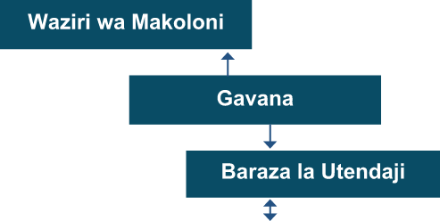
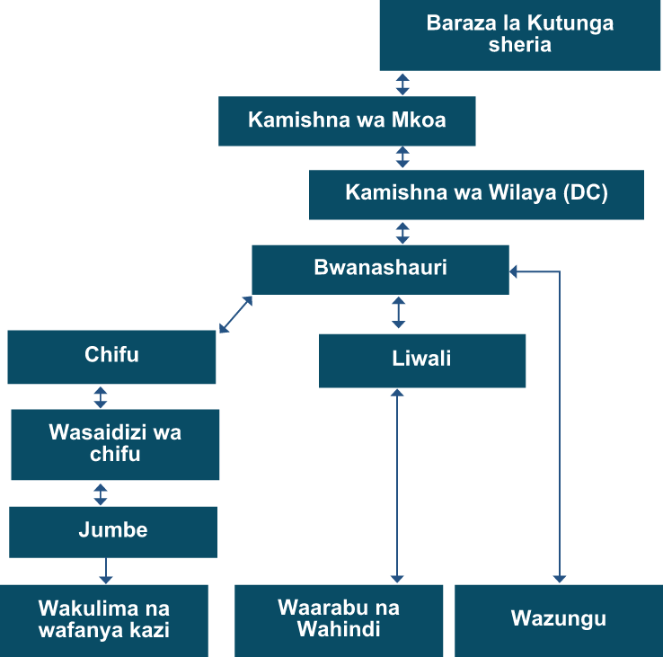

Waingereza

Waziri wa Makoloni
Gavana
Baraza la Utendaji
Mshauri wa Gavana kuhusu mambo ya Waafrika

Baraza la Kutunga sheria
Kamishna wa Mkoa
Kamishna wa Wilaya (DC)
Bwanashauri
Chifu
Liwali
Wasaidizi wa chifu
Jumbe
Wakulima na wafanya kazi
Waarabu na Wahindi
Wazungu
Kielelezo namba 7: Muundo wa serikali ya Waingereza
Muundo wa utawala wa Waingereza katika makoloni unaonesha kuwa baada ya Malkia wa Uingereza, waziri wa makoloni ndiye aliyefuatia kimadaraka, akisaidiwa na magavana wa makoloni.Koloni liligawanywa katika majimbo,